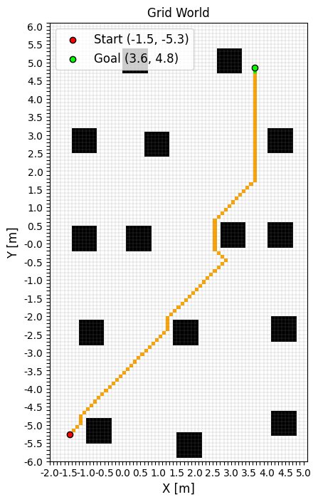
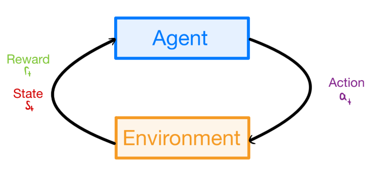
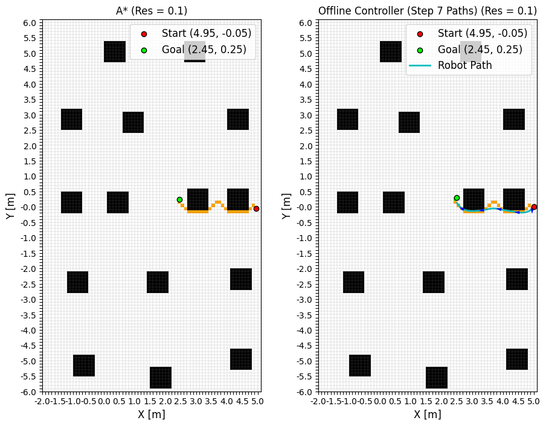
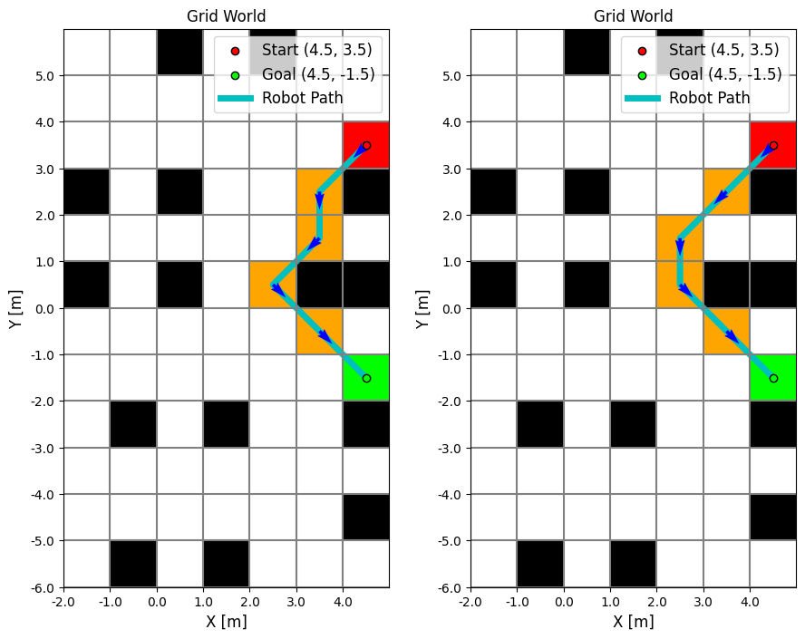
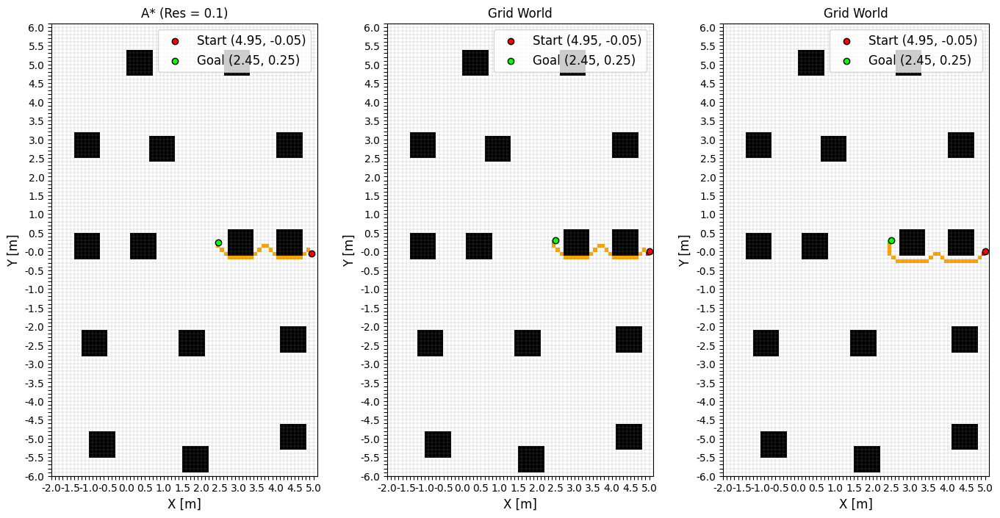
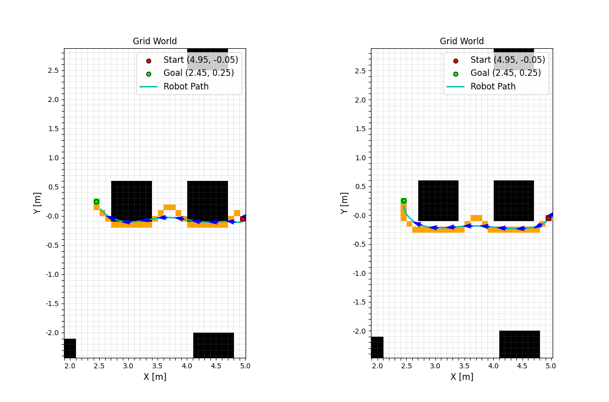
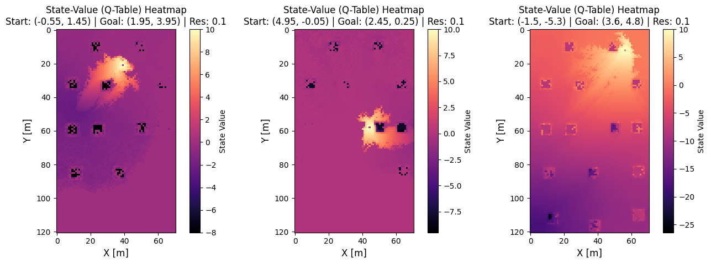
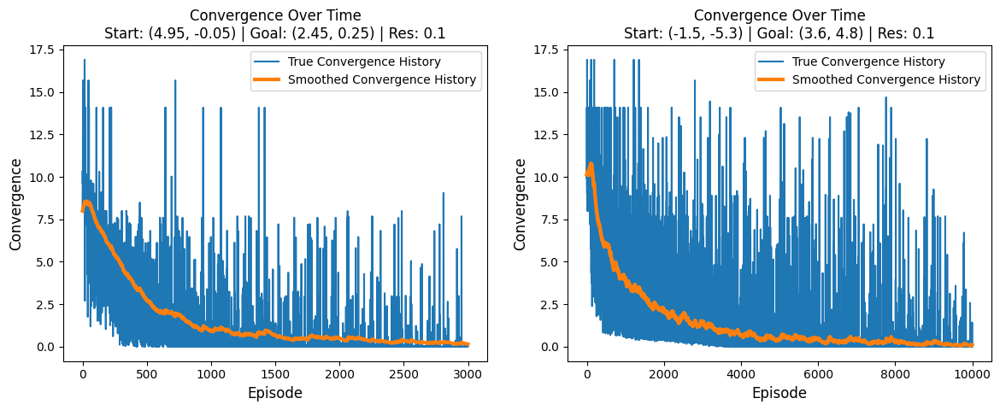
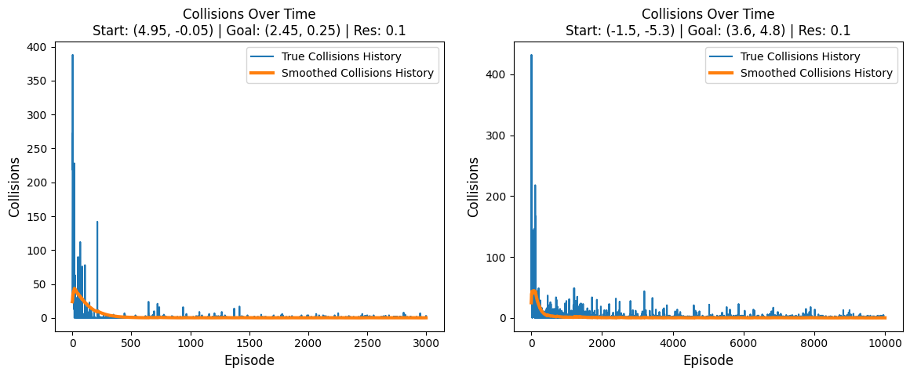

Reformulating grid-world path planning as a Markov Decision Process and solving it with tabular Q-Learning, so the robot learns paths that are not just optimal like A*, but also keep a safe distance from obstacles.
Status: Completed · Fall 2025 (ME 469)
This project reframes robot path planning as a reinforcement learning problem. Rather than searching a map directly the way A* does, I modeled the grid world as a Markov Decision Process - states are grid positions, actions are the 8 possible moves to neighboring cells, and transitions are deterministic - and trained a tabular Q-Learning agent to learn a policy that reaches the goal while keeping its distance from obstacles. Q-Learning is a good fit here specifically because the state space is discretizable and small enough to tabulate (84 states at 1 m resolution, 8,591 states at 0.1 m), the world is static and fully Markovian, and every action is deterministic - which, per Kaelbling (1996), is exactly the condition under which Q-Learning is guaranteed to converge to the optimal policy given enough exploration.

The agent-environment training loop: the agent selects an action from its current state, the environment returns the next state and a reward, and the Q-Table is updated accordingly.
A* is optimal and complete, but "optimal" only means shortest - it says nothing about how survivable a path actually is. The shortest path frequently hugs the perimeter of an obstacle, and once that path is handed to a robot with any real motion noise, hugging the wall is exactly what causes a collision. A* also has no memory: every time the map changes or a new query comes in, it has to re-search from scratch, with no accumulated sense of "this area near obstacles is generally risky." Smoothing and preprocessing the raw path helps, but as the plots below show, it isn't enough to fully solve the underlying issue.

Left: the shortest A* path hugs the corner of an obstacle. Right: even after smoothing, the commanded robot trajectory still clips it - a direct consequence of optimizing purely for path length.
The reward function is what actually teaches the agent to avoid hugging obstacles. It combines a large terminal reward at the goal, a large penalty for colliding with an obstacle, and two shaping terms - an attractive pull toward the goal and a repulsive push away from any obstacle within one grid cell:
\(Reward(r_t) = \begin{cases} 10, & d_{goal}=0 \\ -10, & d_{obs}=0 \\ -\beta d_{goal}, & \forall x_t \\ -\delta d_{obs}, & d_{obs}<1 \end{cases}\)
where \(d_{goal}\) and \(d_{obs}\) are the Euclidean distances to the goal and to the nearest obstacle. The \(-\beta d_{goal}\) term is applied everywhere and creates a smooth gradient pulling the agent toward the goal over time - functionally the same role the heuristic distance plays in A*. The \(-\delta d_{obs}\) term only activates within one tile of an obstacle, and is what specifically teaches the agent to keep its distance rather than skim the boundary.

First validation on a simple coarse grid: the optimal-path policy (left) and the obstacle-avoidance policy (right) both reach the goal, with the right policy visibly steering clear of the obstacle.
Training uses an \(\epsilon\)-greedy policy, \(a_t = random(a_t)\) with probability \(\epsilon\) and \(a_t = \operatorname*{argmax}_{a_t} Q^\pi(s,a)\) otherwise, so the agent explores early and increasingly exploits its learned values; testing switches to a pure greedy policy. Every step updates the Q-Table with the standard temporal-difference rule, \(Q(s,a) = Q(s,a) + \alpha[r_t + \gamma \max_{a'} Q(s',a') - Q(s,a)]\), with a learning rate \(\alpha=0.8\), discount \(\gamma=0.95\), exploration rate \(\epsilon=0.3\), \(\beta=0.1\), \(\delta=0.5\), and 3,000-10,000 training episodes depending on how far the start is from the goal. With the obstacle term removed, this reduces exactly to the Bellman optimality equation \(Q^*(s,a) = r_t + \gamma\max_a Q^*(s',a')\) with \(r_t=-\beta d_{goal}\) - the same distance-based gradient A* follows via its heuristic, which is why the two algorithms agree whenever obstacle avoidance is turned off.
Scaled up to the 8,591-state high-resolution grid, the agent reliably reproduced optimal, A*-length paths when the obstacle-avoidance term was left out, and produced genuinely different, safer paths once it was turned on - most strikingly in the case below, where obstacle avoidance led the agent to abandon the direct route entirely in favor of a longer but obstacle-clear detour.

Same start/goal, three policies: A* (left) and Q-Learning's optimal policy (middle) produce an identical path, while Q-Learning's obstacle-avoidance policy (right) finds a distinct, wider-clearance route.
The real payoff shows up under closed-loop control. Feeding the plain A* path to the PID controller from the navigation controller project reproduced the same obstacle-hugging collisions seen earlier, while the obstacle-avoidance path let the robot track the same controller cleanly with zero collisions.

Under the same noisy PID controller (\(\alpha=0.5\)): the A* path (left) collides with both obstacles; the Q-Learning obstacle-avoidance path (right) clears them completely.
Visualizing the learned Q-Table as a heatmap makes the reward shaping visible directly in the value function: value increases smoothly toward the goal and drops sharply around every obstacle, exactly the attractive/repulsive structure the reward function was designed to produce. Better-trained runs (10,000 episodes, right) show a much more fully populated value surface than shorter runs (3,000 episodes, left and middle).

Q-Table heatmaps for three training runs. Bright regions (high value) surround the goal; dark regions (low value) surround obstacles. The rightmost, longest-trained run shows the most fully explored value surface.
Learning dynamics told a consistent story: convergence and collision counts both dropped off quickly - within roughly 300 episodes for a short path and 1,000 for a longer one - but larger state spaces took noticeably longer to settle, simply because there were more state-action pairs left to visit and update.

Convergence (change in Q-Value per episode) settles faster for the shorter path (left) than the longer one (right).

Collisions per episode fall off within a few hundred episodes for both paths, faster for the shorter one.
The full write-up covers the complete MDP formulation, the justification for choosing Q-Learning, the reward function design, hyperparameter tuning notes, and every comparison against A* and the PID controller from the earlier navigation project - along with a discussion of failure modes like sparse Q-Tables under low exploration.